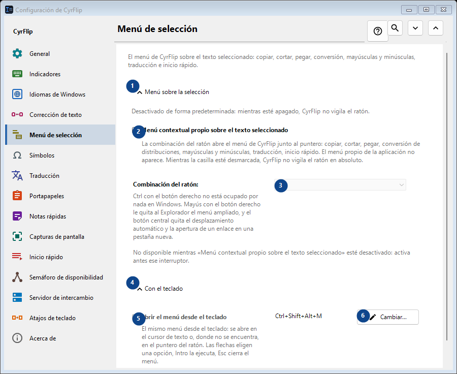
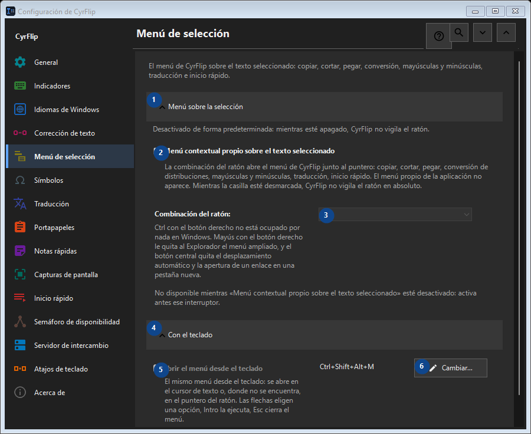

Menú de selección
Para qué sirve
El menú de CyrFlip sobre el texto seleccionado: copiar, cortar, pegar, conversión, mayúsculas y minúsculas, traducción e inicio rápido.


Orden de uso
Los ajustes se aplican de inmediato. No hay un orden obligatorio; usa los grupos siguientes.
Elementos
1. Menú sobre la selección
Usa este comando para la acción indicada. Lee cualquier confirmación antes de aceptarla.
Tus atajos2. Menú contextual propio sobre el texto seleccionado
La combinación del ratón abre el menú de CyrFlip junto al puntero: copiar, cortar, pegar, conversión de distribuciones, mayúsculas y minúsculas, traducción, inicio rápido. El menú propio de la aplicación no aparece. Mientras la casilla esté desmarcada, CyrFlip no vigila el ratón en absoluto.
Tus atajos3. Combinación del ratón
No disponible mientras «Menú contextual propio sobre el texto seleccionado» esté desactivado: activa antes ese interruptor. Este elemento no está disponible. Activa primero la función o selecciona una entrada.
Tus atajos4. Con el teclado
Usa este comando para la acción indicada. Lee cualquier confirmación antes de aceptarla.
Tus atajos5. Abrir el menú desde el teclado
No disponible mientras «Menú contextual propio sobre el texto seleccionado» esté desactivado: activa antes ese interruptor. Este elemento no está disponible. Activa primero la función o selecciona una entrada.
Tus atajos6. Cambiar - Abrir el menú desde el teclado
Usa este comando para la acción indicada. Lee cualquier confirmación antes de aceptarla.
Tus atajos